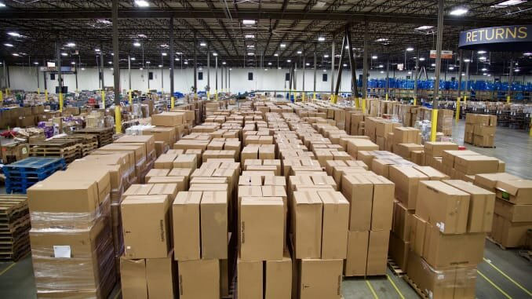
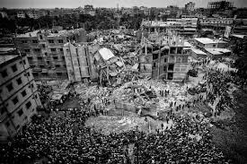

Co je fast fashion?
Fast fashion označuje rychlou a levnou výrobu oblečení, která reaguje na trendy a tlačí spotřebitele ke stále větší spotřebě. Značky jako Shein nebo Zara vydávají nové kolekce každý týden – ale za jakou cenu?
Ekologické dopady
Módní průmysl je druhý nejšpinavější na světě. Vyrábí se ohromné množství oblečení, které často končí nenošené na skládce. Výroba látek jako bavlna nebo polyester je náročná na vodu, energii a chemikálie.
- Na 1 tričko padne až 2700 litrů vody.
- Polyester je plast a uvolňuje mikroplasty do oceánů.
- Barvení látek znečišťuje řeky v rozvojových zemích.
Lidské utrpení
Oblečení za pár korun často vyrábějí lidé, kteří dostávají pár korun za den. V továrnách chybí bezpečnostní opatření, pracovní doba je extrémní. Pamatujme na tragédii Rana Plaza z roku 2013.
Co můžeme dělat my?
Každý má sílu něco změnit. Nejde o to být dokonalý, ale vědomý.
Oblečení by mělo být radost – ne zátěž pro planetu. Každý kousek, který nenakoupíš, má vliv.